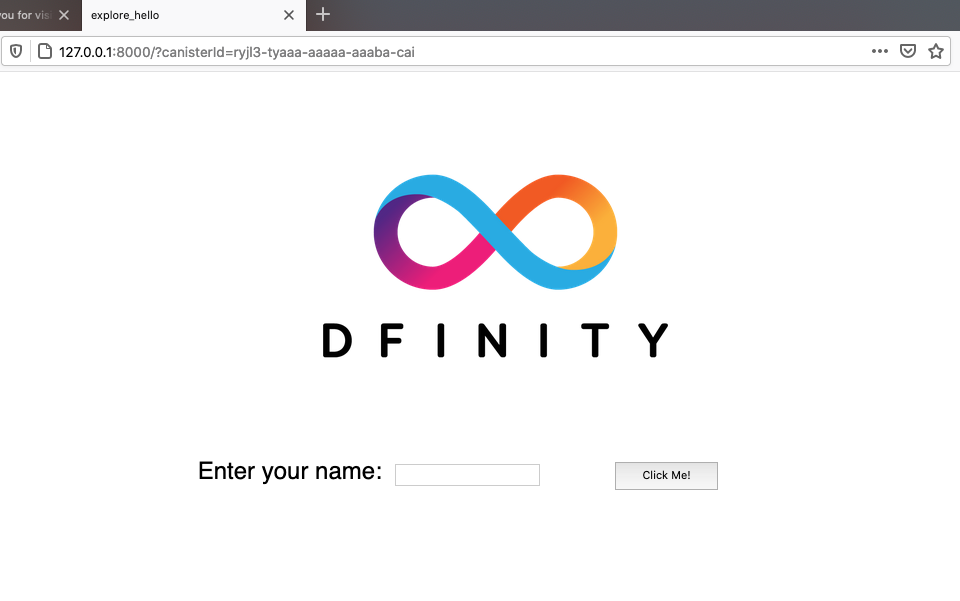

探索默认项目
如果你在快速开始章节体验过 DFINITY 容器 SDK，那你已经熟悉了 ICP 创建应用的基本工作流程。
现在，让我们通过探索新项目中默认创建的文件来深入了解工作流程。
下面的图片描述了在本地运行 ICP 进行开发的工作流程。

开始前的准备
开始本教程前，请检查下面的步骤是否完成了：
-
有一台有网络连接的 macOS 或 Linux 电脑
-
安装了 node.js（如果需要包含前端开发的默认模板文件）
-
下载并安装了 DFINITY 容器 SDK 参考下载和安装章节.
-
如果你使用的是 VsCode 作为 IDE，请确认安装了 Motoko 的 VSCode 插件 参考安装语言编辑器插件 .
-
本地电脑上没有运行 ICP 网络进程
该教程大约耗时20分钟。
创建新项目
创建新项目需要用到 dfx 命令
-
打开终端
-
进入工作目录
-
运行下面的命令来创建项目:
dfx new explore_hello这条命令会创建一个新的 explore_hello 项目，包含一个默认的项目目录结构，同时会初始化为一个 git 仓库。如果安装了 node.js，还会包含前端代码和相关依赖。
为了保证兼容性，项目名称只能使用字母和下划线。
-
运行下面的命令查看默认目录结构
ls -l explore_hello项目目录结构中默认包含至少一个 src 子目录，一个模板 README.md 文件和一个默认的 dfx.json 配置文件
如果安装了 node.js，项目目录下会包含以下文件
explore_hello/ ├── README.md # default project documentation ├── dfx.json # project configuration file ├── node_modules # libraries for front-end development ├── package-lock.json ├── package.json ├── src # source files directory │ ├── explore_hello │ │ └── main.mo │ └── explore_hello_assets │ ├── assets │ │ ├── logo.png │ │ ├── main.css │ │ └── sample-asset.txt │ └── src │ ├── index.html │ └── index.js └── webpack.config.js
默认项目目录至少包含以下文件:
-
默认的 README 文件，用于项目说明
-
默认的 dfx.json 配置文件，用于项目配置
-
默认的 src 目录，存放应用源码文件
-
默认的 src 目录包含模版文件 main.mo，你可以修改来包含核心程序逻辑。
这个教程内容很基础，只需要用到 main.mo 文件。
如果安装了 node.js，项目目录会包含应用前端相关的文件和目录。前端开发和 public 目录下的模板文件会在后续教程中解释。
-
默认配置
检查默认配置步骤如下:
-
打开命令行
-
进入项目目录
cd explore_hello -
在编辑器中，打开 dfx.json 配置文件
{ "canisters": { "explore_hello": { "main": "src/explore_hello/main.mo", "type": "motoko" }, "explore_hello_assets": { "dependencies": [ "explore_hello" ], "frontend": { "entrypoint": "src/explore_hello_assets/src/index.js" }, "source": [ "src/explore_hello_assets/assets", "dist/explore_hello_assets/" ], "type": "assets" } }, "defaults": { "build": { "packtool": "" } }, "dfx": "0.8.2", "networks": { "local": { "bind": "127.0.0.1:8000", "type": "ephemeral" } }, "version": 1 }默认配置
-
canisters 字段指定项目的 WebAssembly 模块名称为 explore_hello
-
canisters.explore_hello 中的 main 字段指定被编译的 main 程序文件路径，这里是 src/explore_hello/main.mo，type 字段指定语言类型，这里是 motoko
-
canisters.explore_hello_assets 字段指定项目的前端资源信息
-
dfx 配置被用来指定创建项目的软件版本
-
netowrks 字段指定连接的网络信息。默认配置会将 ICP 网络绑定到本地地址 127.0.0.1，端口 8000。
如果可以访问其他 ICP 网络提供商，可以在 networks 字段中包含相关的 URL 来连接。
你也可以保留默认设置
-
-
关闭dfx.json文件继续。
默认程序代码
新项目会包含一个 main.mo 模板源码文件。
通过编辑这个文件包含你的代码来加速开发。
接下来以 main.mo 模版文件为例来学习使用 Motoko 编程语言。
-
在项目目录下运行命令
pwd -
编辑器中打开 src/explore_hello/main.mo 文件查看模板代码
actor { public func greet(name : Text) : async Text { return "Hello, " # name # "!"; }; };这段程序有几个元素：
-
示例代码定义了 actor 而不是常见的 main 函数，对于 Motoko，main 函数已经隐式地包含在文件里了。
-
虽然常见的“Hello，World！”程序描述了如何使用 print 或 println 函数打印字符串，但是一般的程序无法展示 Motoko 在 ICP 上如何使用。
-
这段示例代码定义了一个 actor，包含一个公共的 greet 函数，greet 函数接收一个 Text 类型的 name 参数。
-
程序使用 async 关键字指定程序返回一个异步文本消息，该消息通过#操作符拼接，由 “Hello，”，name 参数和“！”组成。
之后会深入介绍如何使用 actor 对象和异步消息处理。
-
-
关闭 main.mo 继续。
启动本地网络
开始构建项目前，需要连接到本地或远程 ICP 网络。
启动本地网络需要 dfx.json 文件，需要确认在项目根目录操作。在这篇教程中，建议开启 2 个终端，一个启动网络，另一个管理项目。
启动网络步骤：
-
打开新的终端。
-
进入项目根目录。
-
你现在应该已经打开了两个终端
-
项目目录应该是你的现在的工作目录
-
-
进入项目根目录。
dfx start这是可能会有警告信息显示，这取决于使用的平台安全策略配置。这时请选择允许。
启动本地网络后，终端会显示网络操作信息。
-
切换到项目终端。
注册 Canister 识别码
连接到本地开发 ICP 网络后，可以为项目注册一个网络中唯一的 Canister 识别码。
在 快速开始 章节中, 这一步会在 dfx deploy 命令中执行。
这片教程演示如何独立执行这些命令。
在本地网络注册 Canister 识别码步骤：
-
进入项目根目录
-
运行下面的命令注册 Canister 识别码
dfx canister create --all命令会显示定义在 dfx.json 配置文件里的 Canster 在本地网络唯一的 Canister 识别码。
Creating a wallet canister on the local network. The wallet canister on the "local" network for user "pubs-id" is "rwlgt-iiaaa-aaaaa-aaaaa-cai" Creating canister "explore_hello"... "explore_hello" canister created with canister id: "rrkah-fqaaa-aaaaa-aaaaq-cai" Creating canister "explore_hello_assets"... "explore_hello_assets" canister created with canister id: "ryjl3-tyaaa-aaaaa-aaaba-cai"
如果你连接的是本地开发 ICP 网络，这些 Canister 识别码只在本地有效，并存储在项目的.dfx/local/canister_ids.json 文件
文件内容示例：
{ "explore_hello": { "local": "rrkah-fqaaa-aaaaa-aaaaq-cai" }, "explore_hello_assets": { "local": "ryjl3-tyaaa-aaaaa-aaaba-cai" } }
项目构建
在了解了默认配置和代码并启动好本地 ICP 网络后，接下来学习如何把示例程序编译为可执行的 WebAssembly 模块
构建步骤：
-
在命令行中进入 explore_hello 项目目录。
-
运行下面的命令
dfx build输出信息如下:
Building canisters... Building frontend...
命令会在项目的.dfx/local/目录下添加 canisters 目录。
-
运行下面的命令检查 dfx build 命令创建的 .dfx/local/canisters/explore_hello 目录包含 WebAssembly 和相关应用文件。
ls -l .dfx/local/canisters/explore_hello/命令输出
-rw-r--r-- 1 pubs staff 178 Apr 6 14:25 explore_hello.d.ts -rw-r--r-- 1 pubs staff 41 Apr 6 14:25 explore_hello.did -rw-r--r-- 1 pubs staff 155 Apr 6 14:25 explore_hello.did.js -rw-r--r-- 1 pubs staff 142 Apr 6 14:25 explore_hello.js -rw-r--r-- 1 pubs staff 157613 Apr 6 14:25 explore_hello.wasm
canisters/explore_hello 目录包含如下关键文件：
-
explore_hello.did 文件包含 main 程序的接口描述
-
The explore_hello.did.js 文件包含用 JavaScript 描述的程序 Canister 函数接口
-
The explore_hello.js 文件包含用 JavaScript 描述的程序 Canister 接口
-
The explore_hello.wasm 包含编译后的 WebAssembly
canisters/explore_hello_assets 目录包含相似的文件，用于描述项目的前端资源。
除了这些目录，dfx build 命令还会创建 idl 目录。
-
-
检验是否生成`src/declarations`.
文件夹会包括.dfx/local的复件，除了wasm。它们不含任何秘密，我们推荐和余下的源代码一起提交这些文件。
本地项目部署
部署程序到 ICP 网络需要 WebAssembly 模块和 canister_manifest.json 文件
部署步骤：
-
进入项目目录
-
运行命令
dfx canister install --all命令输出
Installing code for canister explore_hello, with canister_id rrkah-fqaaa-aaaaa-aaaaq-cai Installing code for canister explore_hello_assets, with canister_id ryjl3-tyaaa-aaaaa-aaaba-cai Authorizing our identity (pubs-id) to the asset canister... Uploading assets to asset canister... /index.html 1/1 (480 bytes) /index.js 1/1 (296836 bytes) /main.css 1/1 (484 bytes) /sample-asset.txt 1/1 (24 bytes) /logo.png 1/1 (25397 bytes) /index.js.map 1/1 (964679 bytes) /index.js.LICENSE.txt 1/1 (499 bytes)
-
运行下面的命令调用程序相关函数
dfx canister call explore_hello greet '("everyone": text)'命令参数
-
explore_hello 调用的 Canister 名称或应用服务
-
greet 调用的方法
-
everyone 传给 greet 函数的参数
-
-
验证输出
("Hello, everyone!")
查看默认的前端
如果开发环境安装了 node.js，那么项目中会包含一个简单的前端示例，示例中的JavaScript模板脚本index.js会在浏览器中对接explore_hello程序。
前端模板部署步骤：
-
打开命令行，进入项目目录。
-
打开src/explore_hello_assets/src/index.js文件，查看代码。
import { explore_hello } from "../../declarations/explore_hello"; document.getElementById("clickMeBtn").addEventListener("click", async () => { const name = document.getElementById("name").value.toString(); // Interact with explore_hello actor, calling the greet method const greeting = await explore_hello.greet(name); document.getElementById("greeting").innerText = greeting; });模板index.js文件使用两个import语句为dfx生成的explorer_hello canister显式创建代理实例和actor。
此文件与模板 index.html 文件结合使用，以显示带有图像、输入和greet方法按钮的 HTML 页面。
示例文件倒入创建的Canister并在一个提示框中调用greet函数。
-
关闭index.js文件继续。
-
查看自动创建的前端资源文件 。
ls -l .dfx/local/canisters/explore_hello_assets/命令输出示例
drwxr-xr-x 9 pubs staff 288 Apr 6 14:25 assets -r--r--r-- 1 pubs staff 2931 Dec 31 1969 assetstorage.did -r--r--r-- 1 pubs staff 265823 Dec 31 1969 assetstorage.wasm -rw-r--r-- 1 pubs staff 3651 Apr 6 14:25 explore_hello_assets.d.ts -rw-rw-rw- 1 pubs staff 2931 Dec 31 1969 explore_hello_assets.did -rw-r--r-- 1 pubs staff 4236 Apr 6 14:25 explore_hello_assets.did.js -rw-r--r-- 1 pubs staff 149 Apr 6 14:25 explore_hello_assets.js -rw-rw-rw- 1 pubs staff 265823 Dec 31 1969 explore_hello_assets.wasm
这些文件是使用node模块和index.js文件由 dfx build命令自动生成的。
-
使用npm start创建开发环境。
-
打开浏览器，输入在dfx.json中配置的网址127.0.0.1:8000
-
查看生成的HTML网页

-
点击Click Me来调用greet函数。